Next: Exercises Up: Curvature; radius of curvature Previous: Radius of curvature Contents Index
Consider any point P on the curve  . The tangent drawn to
the curve at P has the same slope as the curve itself
at P (see §6.1). In an analogous manner we may construct for each point of the
curve a circle whose curvature is the same as the curvature
of the curve itself at that point. To do this, proceed as
follows. Draw the normal to the curve at P on the concave
side of the curve.
. The tangent drawn to
the curve at P has the same slope as the curve itself
at P (see §6.1). In an analogous manner we may construct for each point of the
curve a circle whose curvature is the same as the curvature
of the curve itself at that point. To do this, proceed as
follows. Draw the normal to the curve at P on the concave
side of the curve.
Lay off on this normal the distance PC = radius of curvature (= R) at P. With C as a center draw the circle passing through P. The curvature of this circle is then 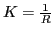, which also equals the curvature of the curve itself at P. The circle so constructed is called the circle of curvature for the point P on the curve.
In general, the circle of curvature of a curve at a point will cross the curve at that point. This is illustrated in the Figure 12.3.
Just as the tangent at P shows the direction of the curve at P, so the circle of curvature at P aids us very materially in forming a geometric concept of the curvature of the curve at P, the rate of change of direction of the curve and of the circle being the same at P.
The circle of curvature can be defined as the limiting position of a secant circle, a definition analogous to that of the tangent given in §4.9.
Solution. 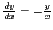, 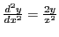. For , 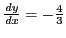, 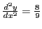, so
We solve for the circle of curvature using SAGE. First, we solve for the intersection of the normal 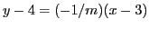, where 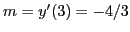, and the circle of radius 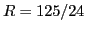 about :
[fontsize=\scriptsize,fontfamily=courier,fontshape=tt,frame=single,label=\sage]
sage: x = var("x")
sage: y = 12/x
sage: K = diff(y,x,2)/(1+diff(y,x)^2)^(3/2)
sage: K
24/((144/x^4 + 1)^(3/2)*x^3)
sage: K(3)
24/125
sage: R = 1/K(3)
sage: m = diff(y,x)(3); m
-4/3
sage: xx = var("xx")
sage: yy = var("yy")
sage: solve((xx-3)^2+(-1/m)^2*(xx-3)^2==R^2, xx)
[xx == -7/6, xx == 43/6]
This tells us that the normal line intersects the circle of radius  centered
at in 2 points, one of which is at
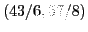. This is the center
of the circle of curvature, so the equation is
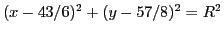.
centered
at in 2 points, one of which is at
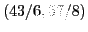. This is the center
of the circle of curvature, so the equation is
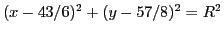.
david joyner 2008-08-11